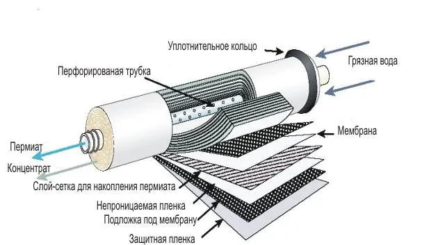

Зворотний осмос: як працює очищення води
Коротко: зворотний осмос — це мембранне очищення, за якого вода під тиском проходить крізь напівпроникну перегородку з дуже дрібними порами. Мембрана пропускає молекули води й затримує більшу частину розчинених солей, а також багато мікроорганізмів і забруднень. Метод застосовують у питних системах, а після очищення воду часто додатково мінералізують для звичнішого смаку.
Що таке зворотний осмос
Слово «осмос» описує природний процес: розчинник переходить крізь напівпроникну мембрану з менш концентрованого розчину в більш концентрований. Якщо прикласти до більш концентрованого боку тиск, що перевищує осмотичний, напрямок руху змінюється на протилежний. Саме тому технологію називають зворотним осмосом: чиста вода «видавлюється» крізь мембрану, а розчинені речовини залишаються з іншого боку.
Розмір пор мембрани обчислюється частками мікрона, близько 0,0001 мікрона. Для порівняння, у звичайних вугільних чи механічних фільтрів пори значно більші, і розчинені солі вони не затримують. Тому осмос розглядають як наступний рівень очищення порівняно з побутовими глечиками та картриджами.
Як проходить процес
- Попереднє очищення. Вода проходить механічні та вугільні фільтри, які прибирають великі частинки, а також частину хлору й органіки. Це захищає мембрану від швидкого зношування.
- Подача під тиском. Насос створює тиск, достатній для того, щоб вода подолала опір мембрани.
- Розділення потоків. Крізь мембрану проходить очищена вода (пермеат). Решта потоку, що містить затримані домішки, скидається в дренаж.
- Додаткова обробка. Після мембрани воду можуть знезаражувати, мінералізувати й перевіряти перед розливом.
Що видаляється з води
Мембрана затримує більшу частину розчинених солей, зокрема солі жорсткості, а також багато органічних речовин, важких металів і мікроорганізмів. Через це смак води стає нейтральним: зникають запахи й присмаки, пов’язані з хлором чи металами. Проте говорити про повний захист від будь-яких забруднень було б неправильно. Результат залежить від стану мембрани, тиску та якості попередніх ступенів, тому обладнання потрібно регулярно обслуговувати й контролювати.
Якщо коротко, осмос ефективно розв’язує завдання, які не під силу простим фільтрам, але не скасовує контролю всієї системи загалом. Докладніше про переваги та обмеження методу ми писали в статті зворотний осмос: плюси та мінуси.
Чим осмос відрізняється від інших методів
| Метод | Як працює | Особливості |
|---|---|---|
| Вугільний фільтр | Адсорбує хлор і органіку | Не прибирає розчинені солі |
| Керамічний фільтр | Затримує механічні частинки та частину бактерій | Не змінює сольовий склад води |
| Іонний обмін | Замінює іони кальцію та магнію | Потрібна регенерація смоли |
| Зворотний осмос | Розділяє воду й розчинені речовини мембраною | Частина води йде в дренаж, потрібна мінералізація |
Вибір методу залежить від завдання. Для смаку води з крана може вистачити фільтра, а для отримання питної води стабільної якості зазвичай використовують багатоступеневу схему, в якій осмос стоїть разом з іншими етапами.
Чому важлива мінералізація після осмосу
Мембрана видаляє більшу частину розчинених солей, тому вода після неї майже не містить мінералів. Її смак часто називають прісним або «порожнім». Щоб зробити смак звичнішим, воду після осмосу мінералізують: додають невелику кількість мінеральних солей до обраного рівня. Це питання органолептики та стандартів виробника, а не лікувальних властивостей.
Багато фахівців нагадують, що основну частину потрібних мінералів людина отримує з їжі, а не з води. Якщо у вас є особливі дієтичні потреби, обговоріть питний режим з лікарем. Більше про вибір води можна прочитати в матеріалі як вибрати питну воду для дому.
Як ми використовуємо зворотний осмос у Crystal Water
Ми постачаємо воду «Кришталево-чиста питна вода». Вона проходить 8 ступенів очищення, включно зі зворотним осмосом і озонуванням, а її pH близько 7,5. Озонування застосовується для знезараження, а повний опис етапів є на сторінці технології очищення. Про компанію читайте в розділі про нас, а інші матеріали зібрано в розділі статті.
Пляшка об’ємом 19,9 л коштує 100 грн, застава за пляшку — 225 грн, помпа — 160 грн. Ми доставляємо воду в Броварах і Києві, мінімальне замовлення — 2 пляшки, а першу пляшку можна спробувати безкоштовно. Актуальні умови ви знайдете на сторінці послуги та ціни.
Де застосовують зворотний осмос
Технологія давно вийшла за межі промисловості. Мембранні системи використовують у водопідготовці для виробництва напоїв, у лабораторіях, на підприємствах харчової галузі, а також у домашніх фільтрах під мийкою. Принцип усюди один, різняться лише масштаб, тиск і кількість ступенів попередньої та подальшої обробки. У побутових установках важливо стежити за терміном служби картриджів і мембрани, інакше якість води може знизитися.
Що ще варто знати
Швидкість отримання води залежить від тиску, температури та стану мембрани. Холодна вода проходить мембрану повільніше, а забруднення знижує продуктивність. Тому в серйозних системах контролюють тиск, провідність і стан фільтрів, а воду перед розливом перевіряють. Для покупця це означає просте правило: обирайте постачальника, який прямо розповідає, як він очищає та контролює воду.
Часті запитання
Чи прибирає зворотний осмос віруси та бактерії?
Мембрана затримує багато мікроорганізмів, але надійність знезараження залежить від усієї системи. Тому в схему зазвичай додають окремі етапи, наприклад озонування.
Чому вода після осмосу може здаватися прісною?
З неї видалено більшу частину розчинених солей. Мінералізація після очищення допомагає зробити смак звичнішим.
Куди йде частина води під час осмосу?
Потік із затриманими домішками скидається в дренаж. Це особливість методу, а не несправність обладнання.
Чи потрібне обслуговування осмосу?
Так. Попередні фільтри та мембрани міняють за регламентом, інакше якість очищення може погіршитися.
Вода після зворотного осмосу з доставкою додому
Замовте воду Crystal Water у Броварах або Києві: перша пляшка для проби безкоштовно, мінімальне замовлення — 2 пляшки.
Переглянути ціни та замовити